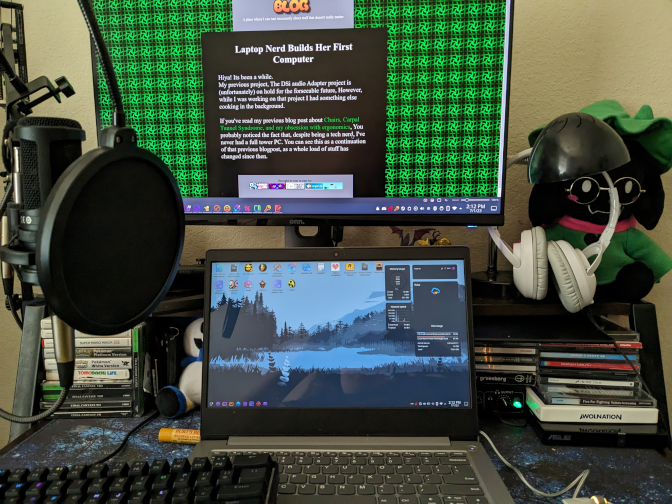
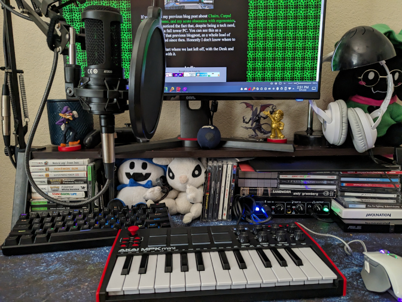
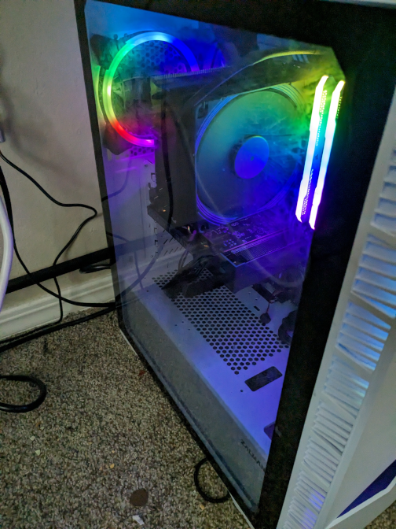
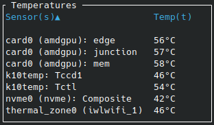

Laptop Nerd Builds Her First Computer
Hiya! Its been a while.My previous project, The DSi audio Adapter project is (unfortunately) on hold for the forseeable future, However, while I was working on that project I had something else cooking in the background.

If you've read my previous blog post about Chairs, Carpal Tunnel Syndrome, and my acute obsession with ergonomics, You probably noticed the fact that, despite being a tech nerd, I've never had a full tower PC. You can see this as a continuation of that previous blogpost, as a whole load of stuff has changed since then. Honestly I don't know where to start...
So I guess we start where we last left off, with the Desk and what I've done with it.
Audio
 Since the last time I've posted I've completely overhauled my audio setup. You may not have been able to tell, but in the original setup, I had a Behringer U-Phoria UM2 audio interface that started to get really static-y in the XLR port, almost to the point where the microphone became unusable. After believing that its the microphone (and breaking it), I had to replace my mic (that I bought Used) with a brand new AT2020, and a BluCoil 48 V Portable USB Audio Interface
After believing that its the microphone (and breaking it), I had to replace my mic (that I bought Used) with a brand new AT2020, and a BluCoil 48 V Portable USB Audio Interface
 Part of my reasoning for choosing this audio interface was the fact that I wanted something that worked, but also had knobs on the front (i'm a total sucker for knobs, 3 Cheers for analog volume controls!)
Part of my reasoning for choosing this audio interface was the fact that I wanted something that worked, but also had knobs on the front (i'm a total sucker for knobs, 3 Cheers for analog volume controls!)The headphones that I currently have plugged into the Audio Interface is a Koss BT539i, a good value set of bluetooth headphones that allow for extreme flexibility. I have a second pair of headphones, an Audio Technica M50xBT2, a set of Studio headphones that are as flexible as they are expensive ($200 well spent).
 The entire purpose of this build was Flexibility. I never, at any point, wanted to feel like I was held back by my hardware choices. If I, say, wanted to make Youtube Videos, I'm totally capable of doing that with this audio setup. If I wanted to make music, I have my Midi Keyboard, I have my myriad of musical instruments, and you'd better believe I'll be busting some tunes.
The entire purpose of this build was Flexibility. I never, at any point, wanted to feel like I was held back by my hardware choices. If I, say, wanted to make Youtube Videos, I'm totally capable of doing that with this audio setup. If I wanted to make music, I have my Midi Keyboard, I have my myriad of musical instruments, and you'd better believe I'll be busting some tunes.
The Actual Computer
You probably didn't click on this blog post for audio nerd shit. You clicked on this blog for some old fashioned computer nerd shit. Well, I'm proud to announce that I'll be able satisfy that need.The Noir
 DDR4-3600 CL18 Memory, Kingston NV2 2 TB M.2-2280 PCIe 4.0 X4 NVME Solid State Drive Gigabyte EAGLE Radeon RX 6500 XT 4 GB Video Card, Gigabyte GAMING OC Radeon RX 6750 XT 12 GB Video Card (not ordered), Zalman Z3 Iceberg ATX Mid Tower Case, and a Gigabyte UD1000GM 1000 W 80+ Gold Certified Fully Modular ATX Power Supply.") This is The Noir, an AMD-based system creating the best environment for my Linux system to operate, and for a cheap price too.
This is The Noir, an AMD-based system creating the best environment for my Linux system to operate, and for a cheap price too.I built her over the span of 3 months, with the best end-of-the-line AM4 system possible. The only bottleneck I have is the GPU, when I get the 2nd GPU the one I'm currently using will be dedicated to running KVMs (Kernel Virtual Machines) with GPU Passthrough. She can run basically any software I toss at it. With 32 gigs of ram she's an absolute beast that only the highest end of AAA games with absolutely abysmal optimizations could dream of filling, all while running at a low 40C and only going to high 50Cs under heavy loads.
My first time building a computer was definitely... Interesting. It wasn't until I basically had the entire thing built that I had to use my background in tech support to deduce that I got a faulty motherboard (I went all-in on the fact that the computer booted ONCE with no stability issues, even under heavy CPU, GPU, and RAM loads. If anything crashed while it was booted I knew that it was something else.), so I had to get a replacement. While I was swapping all of the components, I accidentally bent one of the pins on my CPU. Just my luck. Luckily I have small steady hands so I was able to bend the pins back with relative ease.
I was too busy focusing on fixing shit that I didn't even think to document it.
Building a computer was definitely a unique experience, multiple points did i lose motivation and almost give up, but I knew that it would all be worth it.